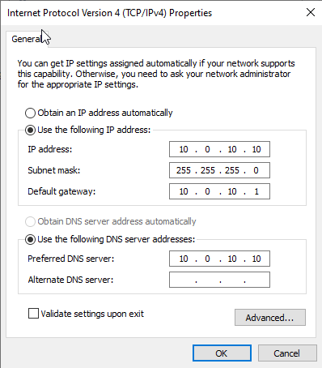
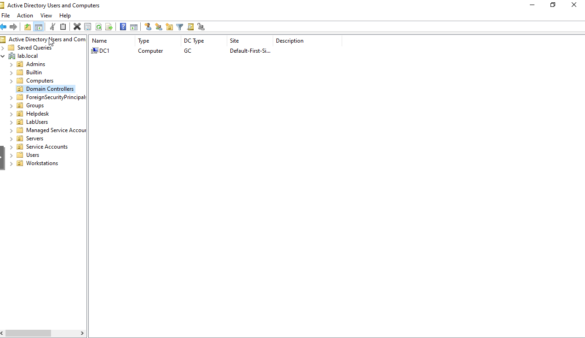
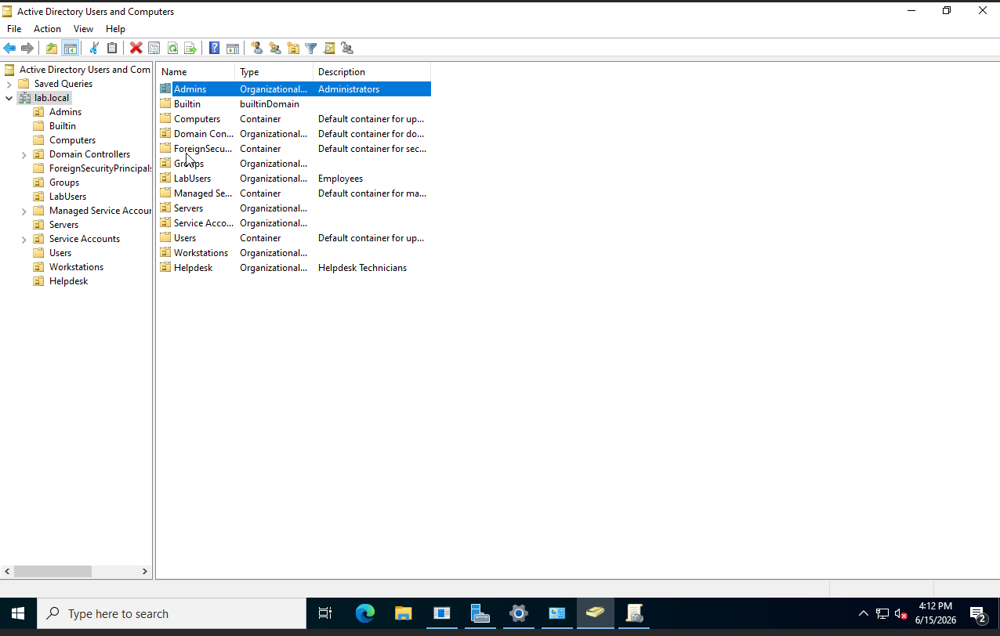
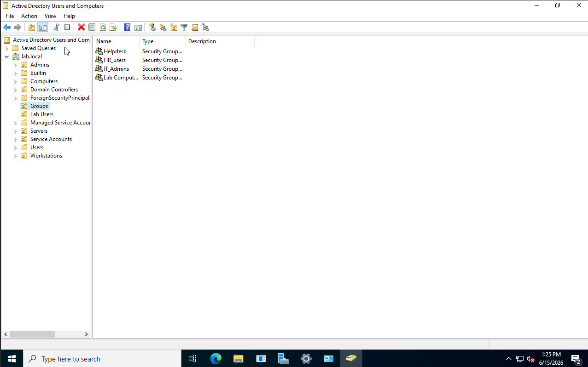
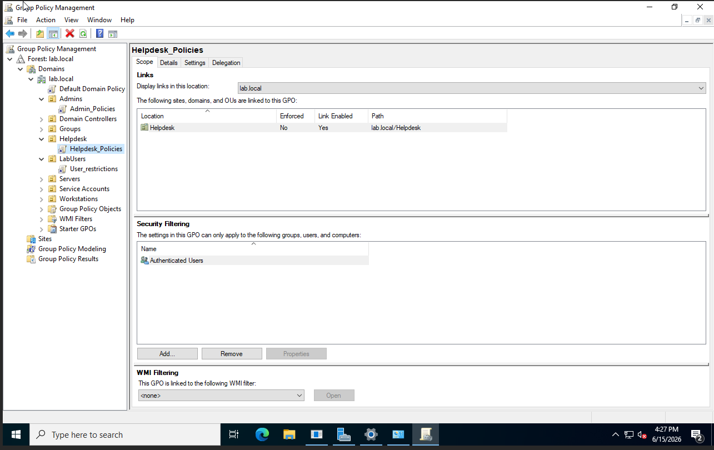
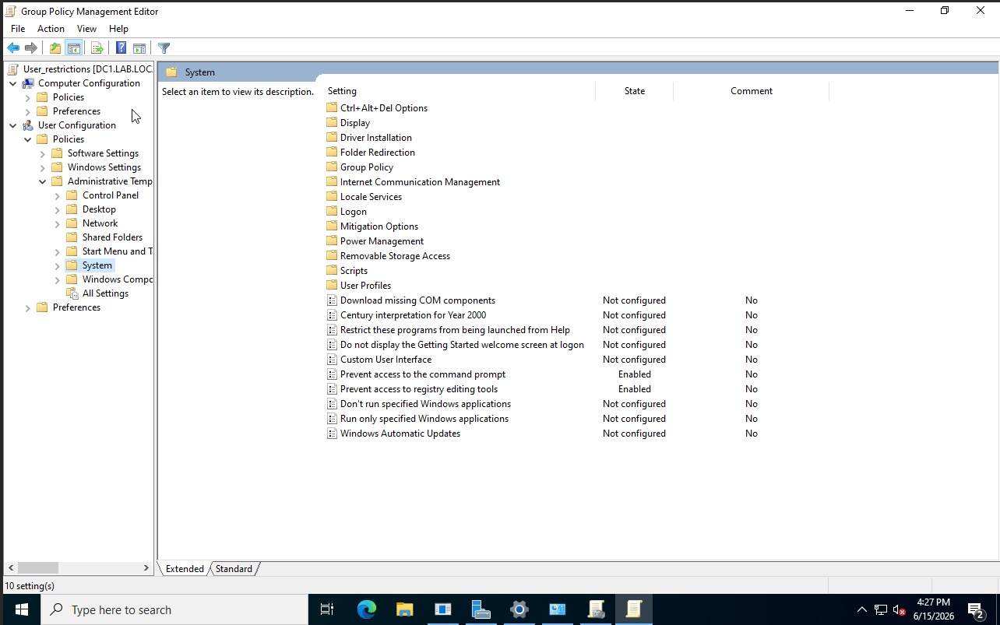
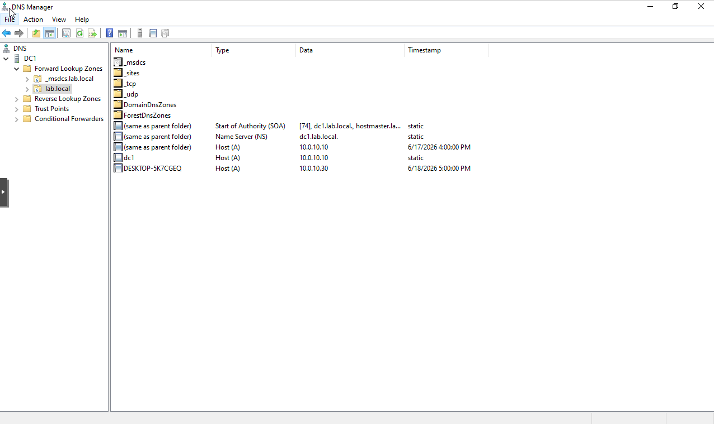

Windows Active Directory Lab
Enterprise-style Active Directory environment built using Windows Server, DNS, Group Policy, and centralized user management.
Project Overview
This project demonstrates the deployment and administration of a Windows Server Active Directory environment designed to simulate a small business network. The lab includes domain services, DNS, organizational units, user management, and Group Policy administration.
Lab Architecture
Windows 11 Client
|
|
Domain Join
|
v
+-------------------+
| Windows Server |
| Domain Controller |
+-------------------+
|
+---- Active Directory
|
+---- DNS
|
+---- Group Policy
Windows Server Deployment
Installed Windows Server and configured static networking to provide centralized identity and infrastructure services.
- Installed Windows Server on VM
- Configured static IPv4 addressing
- Configured server hostname
- Applied Windows Updates
- Verified network connectivity

Active Directory Configuration
Promoted the server to a Domain Controller and configured Active Directory Domain Services.
- Installed Active Directory Domain Services role
- Configured domain naming structure
- Verified domain controller functionality
- Validated replication services

User & Group Management
Created users, security groups, and organizational units to simulate a business environment.
- Created Organizational Units (OUs)
- Created user accounts
- Configured security groups
- Assigned group memberships
- Implemented role-based access management


Group Policy Configuration
Implemented Group Policy Objects to standardize workstation configuration and security settings.
- Password complexity policies
- Password expiration policies
- Desktop restrictions
- Control Panel restrictions
- Security hardening settings


DNS Services
Configured and managed DNS services required for Active Directory authentication and domain functionality.
- Installed DNS Server role during Active Directory deployment
- Configured DNS zones for Active Directory
- Verified domain name resolution
- Troubleshot DNS-related authentication and domain join issues
- Validated client communication with the domain controller

Security Configuration
- Enforced password policies
- Restricted administrative privileges
- Applied Group Policy security settings
Skills Demonstrated
- Windows Server Administration
- Active Directory Administration
- DNS Management
- Group Policy Administration
- User & Access Management
- Network Troubleshooting
- Security Policy Implementation